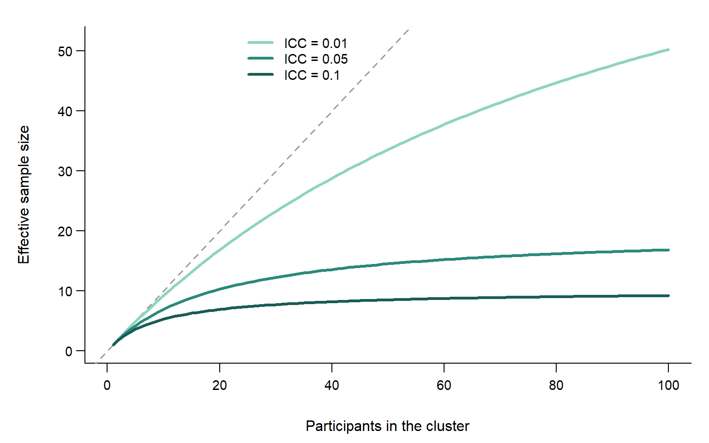
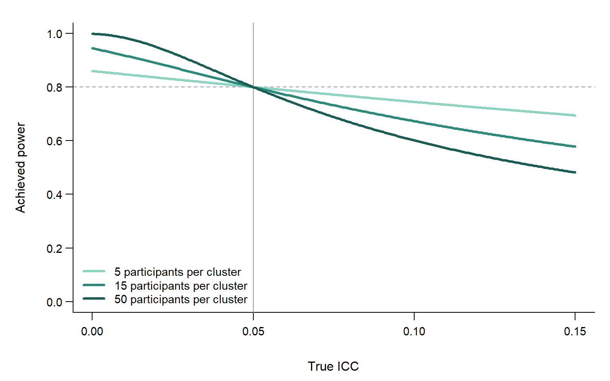
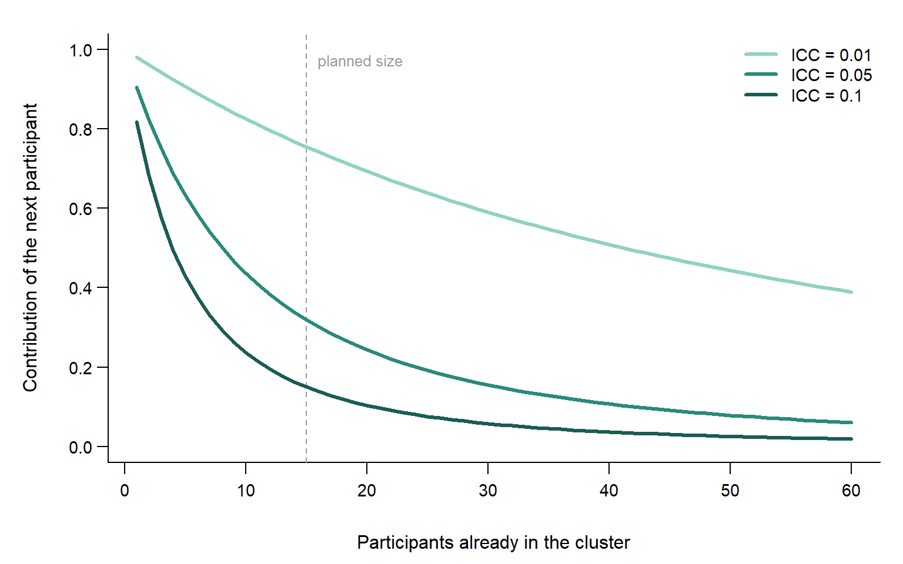
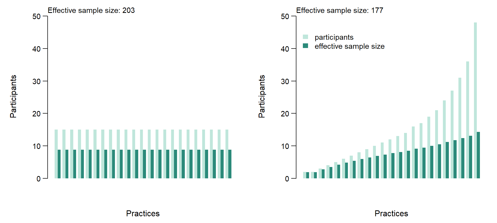
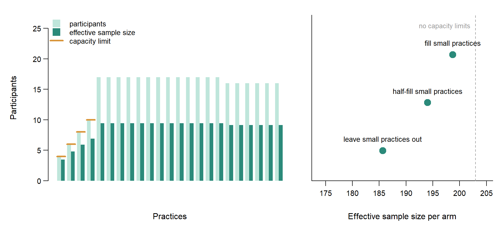

👥 How much information does a clustered study contain?
When participants are recruited in clusters, effect sizes and the number of participants are only part of the story. How strongly participants within a cluster are alike, and how participants are distributed over clusters, determine how much information a study contains.
NoteRunning example
We continue the running example from the posts on more adaptive forms of sample size planning (part 1 and part 2): a trial comparing an intuitive eating programme with a programme of structured dietary rules, in adults with subclinical eating and body image concerns. We focus on body image and plan for a standardised effect of 0.25, with a one-sided \(\alpha\) of 0.05 and 80% power. If participants were independent, that would require 198 participants per arm. In this post, the trial recruits participants through psychology practices, which form the clusters. We assume an intraclass correlation of 0.05 and plan for 15 participants per practice, which requires 23 practices per arm.
In studies that recruit participants in clusters, the number of participants says less about the information a study contains than one might expect. Patients are recruited within general practices, pupils within classes, clients within psychology practices: in each case, participants within the same cluster tend to be more alike than participants in different clusters. If the latter is the case, then the information in such a study depends not only on how many participants take part, but also on how strongly participants within a cluster are alike and on how participants are distributed over clusters. This post first describes what a participant in a cluster contributes, and why even a small intraclass correlation (ICC) can have noticeable consequences for the sample size. It then turns to a question that receives less attention in sample size planning: how participants are best distributed over clusters when clusters turn out unequal in size, when recruitment does not go as planned, and when some clusters cannot grow beyond a certain size. Throughout, we consider the case of our running example: a continuous outcome, two arms, randomisation at the cluster level, and similar variances within clusters. Randomisation at the cluster level means that whole practices, rather than individual clients, are assigned to one of the two programmes. This assumption matters for several conclusions in this post, as discussed below.
What a participant in a cluster contributes
When participants within a cluster resemble each other, a participant in a large cluster contributes less to estimating the difference between the programmes than a participant in a small cluster. Practices differ from each other: in one practice, clients may on average have a somewhat better body image than in another, for instance because the practice attracts a particular group of clients. What clients within a practice share in this way is called the cluster effect. The ICC (intraclass correlation) expresses how large the cluster effect is, as the share of all differences between clients that lies between practices. If practices hardly differ, the ICC will be small and clients from the same practice contribute nearly as much as clients from different practices. In this case, a large practice does not pose a large problem. The more practices differ, the more the estimate comes to depend on the particular practices in the sample. In that case, clients from a large practice then tell us more about that practice than the same number of clients from multiple small practices do. A client in a large practice therefore contributes less, on average, than a client in a small practice for estimating outcome differences between practices.
This idea is commonly expressed in the effective sample size: the number of independent participants that would contribute as much as the cluster. The ratio between the actual and the effective sample size is known as the design effect, the correction factor that sample size calculations for clustered data usually rely on. A large cluster has a larger effective sample size than a small cluster, but the difference is smaller than the difference in the number of participants. Doubling the number of clients in a large practice therefore increases its effective sample size far less than doubling the number of clients in a small practice. The larger the ICC, the smaller the practices for which this already holds (Figure 1).
TipWhere the effective sample size comes from
Write the variance of the outcome as \(\sigma^2\), of which a share ICC is due to the cluster effect. The mean of a cluster with \(m\) participants then has variance
\[ \sigma^2 \left( \text{ICC} + \frac{1 - \text{ICC}}{m} \right). \]
The first term is the cluster effect, which does not average out. The second term is the individual variation, which does. The mean of \(m\) independent participants would have variance \(\sigma^2 / m\). Dividing the two gives the design effect \(1 + (m - 1)\,\text{ICC}\), and the effective sample size of the cluster is \(m\) divided by the design effect. As \(m\) grows, the effective sample size approaches \(1 / \text{ICC}\).
Why even a small ICC matters
Because the effective sample size depends on the ICC and the cluster size together, even a small ICC can noticeably increase the number of participants a study needs when clusters are large. With the same ICC, a client in a small practice contributes more than a client in a large practice, because fewer clients share the same cluster effect. In a large practice, many clients share it, so even a small ICC can make the contribution of a client noticeably smaller than that of an independent participant. The same holds when the ICC turns out to be larger than the sample size calculation assumed: every practice then has a smaller effective sample size than planned, and the study ends up with less power than intended. A study with small practices is less affected by such a misjudgement than a study with large practices (Figure 2).

TipHow much a small ICC adds to the sample size
A numerical example for our cluster-randomized trial
| ICC = 0.01 | ICC = 0.02 | ICC = 0.05 | |
|---|---|---|---|
| 5 per cluster | 206 | 214 | 238 |
| 15 per cluster | 226 | 254 | 337 |
| 50 per cluster | 295 | 392 | 683 |
With an ICC of 0.01 and 50 participants per cluster, the trial needs 295 participants per arm instead of 198.
More clusters or larger clusters?
The comparison between small and large practices also answers a familiar design question. For a given number of participants, a study with many small practices has a larger effective sample size than a study with a few large practices, because, as we saw above, a client in a large practice contributes less than a client in a small practice. Moreover, because one more client contributes less to a large practice than to a small one, recruiting more clients per practice raises the power of a study with a fixed number of practices less and less. With few practices, the intended power may therefore be out of practical reach. The more practices a study includes, the sooner the intended power comes within reach. Practical considerations, such as the effort involved in including an additional practice, may still favour fewer, larger practices, but in terms of the number of participants needed, more practices are the more efficient choice.
This pattern is a direct consequence of randomisation at the cluster level. Because whole practices are assigned to one of the two programmes, the comparison between the programmes is a comparison between practices, and differences between practices only average out over practices, not over the clients within them. The same holds for any other characteristic that differs between practices but not between clients within a practice. The situation is different when the comparison of interest lies within practices, for instance when clients within the same practice are assigned to different programmes. The cluster effect then drops out of the comparison, because clients from the same practice share it, and the pattern described here does not apply in the same way.
A sample size calculation for clustered data can show more than the number of participants a study needs: it can also show what one more participant within a practice contributes. That contribution depends on how many clients the practice already contributes and on the ICC, and it can be expressed in the same unit as the effective sample size, as a fraction of an independent participant (Figure 3). Setting this against what is feasible, such as the number of eligible clients a practice can realistically recruit, shows up to which practice size additional recruitment within a practice still adds a meaningful amount, and from which size onwards it hardly does. Because the ICC is rarely known with certainty, it is worth mapping this for a range of plausible values. The distance between the curves shows how much the conclusion depends on that assumption. A sample size calculation can provide this at little extra effort, yet it is often left out. With it, the choice between recruiting more clients within the participating practices and involving additional practices becomes a deliberate one, both when designing the study and, as discussed below, when recruitment does not go as planned.

TipWhat one more client contributes in the running example
With an ICC of 0.05, one more client in a practice that already contributes 15 clients contributes as much as 0.32 of an independent participant. In a practice with 30 clients, that is 0.16. At the planned practice size, the same client contributes 0.76 with an ICC of 0.01 and 0.15 with an ICC of 0.1.
Equal or unequal clusters?
For a given number of clusters and participants, the effective sample size is largest when all clusters are equal in size. In a study with unequal clusters, the shortfall lies mainly in the large clusters. A participant in a small cluster contributes relatively much, but small clusters include few participants. Large clusters include many participants who each contribute less. Unequal cluster sizes thus place a large share of the participants where their contribution is smallest (Figure 4). The same comparison explains why equal cluster sizes are optimal. Imagine moving one participant from a larger to a smaller cluster. The effective sample size of the larger cluster becomes somewhat smaller, but that of the smaller cluster becomes larger by more than that, because one more participant contributes more to a smaller cluster than to a larger one. As long as any two clusters differ in size, such a move increases the effective sample size of the study. Only when all clusters are as equal in size as possible does no move help. Perfectly equal clusters are rarely achievable in practice, and they need not be: small differences in cluster size cost little, whereas large differences cost considerably more.

When recruitment does not go as planned
When recruitment does not go as planned, knowing what one more participant contributes shows where additional participants are best recruited. A study can reach its planned number of participants and still fall short of the planned effective sample size, for instance because some practices recruit much faster than others. The intuitive response is to continue recruiting where it goes well, which means recruiting more clients in practices that are already large. As we saw above, these are the practices in which one more client contributes the least. Continuing in a single large practice therefore closes the gap only slowly, and may require more clients than that practice can offer. Recruiting additional clients in the smallest practices, or in new practices, generally closes it with considerably fewer additional participants. When the gap is small, both options are about equally efficient. When it is larger, new practices become the more efficient option, because the smallest practices become larger themselves as they receive more clients. The most efficient option is not necessarily the easiest one, since small practices may be small precisely because recruitment there is slow. This is where mapping the contribution of one more participant pays off: setting it against what each practice can still realistically recruit turns the question of how many more participants are needed into a deliberate choice about where to find them. It is therefore worth checking during recruitment whether the actual distribution of participants over practices still matches the distribution the sample size calculation assumed. Revisiting the sample size during a study was the topic of this post and it may be well worth checking whether the distribution of participants over clusters still matches assumptions. A future post dedicated to this topic is planned.
When some clusters have a capacity limit
Capacity limits are common: a small practice may have only a few eligible clients, just as a class has a fixed number of pupils. Knowing what one more participant contributes turns this into a simple rule: each next participant is best recruited in the practice where one more client contributes the most, among the practices that still have room. Because one more client contributes more to a smaller practice, this rule first fills the practices with a low capacity limit and then keeps the remaining practices as equal in size as possible. The easier alternatives, recruiting only part of what small practices could offer or leaving them out altogether in favour of larger practices, place those participants where they contribute less (Figure 5). The capacity limits prevent a fully equal distribution, so the effective sample size is smaller than it would be without them, but within those limits, no other distribution yields a larger effective sample size under the assumptions of this post.

TipThe numbers behind the capacity example
The four smallest practices can recruit at most 4, 6, 8, 10 participants. Filling them and distributing the remaining participants equally gives an effective sample size of 198.7 per arm, compared with 202.9 without capacity limits. Recruiting only half of the capacity of the small practices gives 194, and leaving them out altogether gives 185.7, although in both cases the same 345 participants take part.
Concluding remarks
In studies that recruit participants in clusters, the number of participants tells only part of the story. What matters is what those participants contribute. A participant in a large practice contributes less than a participant in a small practice, and how much less depends on the ICC. Even a small ICC can therefore have noticeable consequences for the sample size when practices are large, and a misjudged ICC weighs more heavily in a study with large practices than in one with small practices. Knowing what a participant contributes also explains why, for a given number of participants, more and smaller practices are preferable to fewer and larger ones, why equal practice sizes give the largest effective sample size, and why practices with a low capacity limit are best included up to that limit. Above all, it turns a sample size calculation from a single number into a map. Setting the contribution of one more participant against what each practice can realistically recruit shows where additional recruitment pays off and where it hardly does, both when designing a study and when recruitment does not go as planned. Such a map takes little extra effort to make, and it allows decisions about where to recruit to be made deliberately rather than by default.
Questions? Any references that should be included as well? Found this useful? I’m on social media and happy to discuss!
NoteA note on AI assistance
This post was developed in collaboration with Claude (Anthropic). Claude contributed to drafting and revising the text, and generated the R code used to produce the figures, based on an iterative exchange about content, framing, and design. The running example, the technical content, and all final editorial decisions are my own.
Citation
BibTeX citation:
@online{kavelaars2026,
author = {Kavelaars, Xynthia},
title = {Sample Size Planning for Clustered Data - {Part} 1: {What}
Does One More Participant Contribute?},
date = {2026-09-30},
url = {https://xynthiakavelaars.github.io/OpenInferenceLab/posts/2026-09-multilevel-sample-size-computation/},
langid = {en}
}
For attribution, please cite this work as:
Kavelaars, Xynthia. 2026. “Sample Size Planning for Clustered Data
- Part 1: What Does One More Participant Contribute?” September
30. https://xynthiakavelaars.github.io/OpenInferenceLab/posts/2026-09-multilevel-sample-size-computation/.